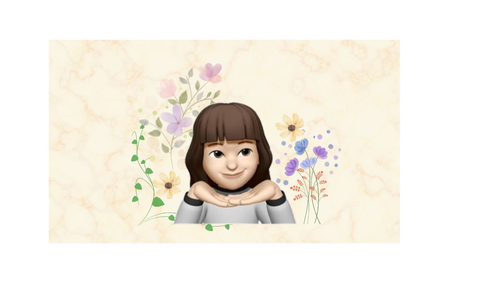

学びと成長
新しいことを学び、
できることを少しずつ増やす。
好きなことで、もっと自由に。もっと私らしく。
WELCOME TO MY LITTLE WORLD
好きなことを楽しみながら、学び続ける。
心と体を大切に、これからの毎日を丁寧に重ねていきたい。
Make a better me ♡
LIFE / LEARNING / WELLNESS
About Me
沖縄在住。これまでさまざまな仕事や経験を通して、人とのつながりや、新しいことを学ぶ楽しさを大切にしてきました。
今はITスキルを学びながら、健康や美容、好きなことを楽しむ時間も大切にしています。
年齢を重ねても好奇心を忘れず、自分らしい働き方と心地よい暮らしを見つけていくことが目標です。
私のこだわりを読む →Life & Value
仕事もプライベートも、どちらも大切にしたい。自分の好きなことや得意なことを活かしながら、無理をしすぎず、心地よく暮らすことを大切にしています。
新しいことを学び、
できることを少しずつ増やす。

好きなことを楽しみ、
自分の可能性を広げる。

新しい景色や出会いで、
心をリフレッシュ。

ゆったりとした時間で、
気持ちを整える。

無理をしすぎず、
心地よい毎日を。

Health & Beauty
いつまでも健やかに、自分らしく過ごすために。食事・運動・睡眠など、日々の小さな習慣を大切にしながら、年齢を重ねることも前向きに楽しみたいと思っています。
バランスを意識して
おいしく食べる
ウォーキングや
ストレッチを楽しむ
休む時間も大切に
心と体を整える
自分に合うケアで
いきいきと過ごす
Contact
最後まで読んでいただき、ありがとうございます。
これからも学びや暮らしの記録を少しずつ更新していきます。
Thank you for visiting ♡